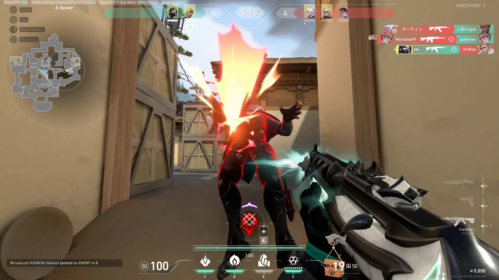
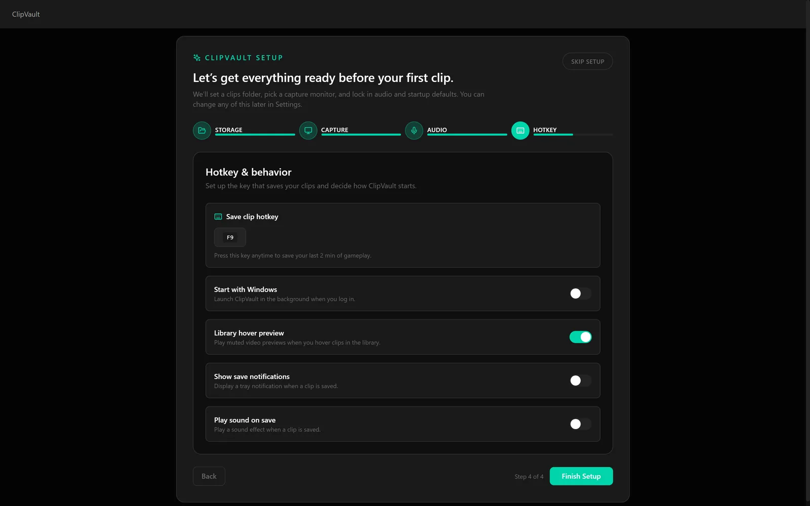
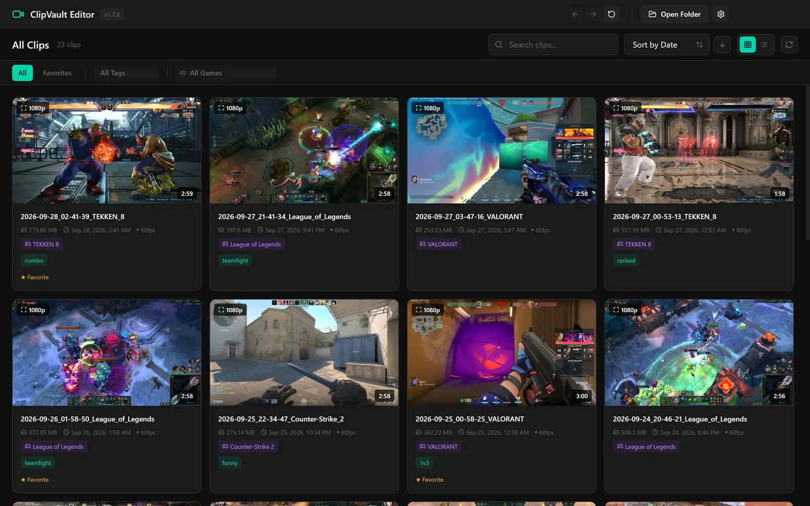
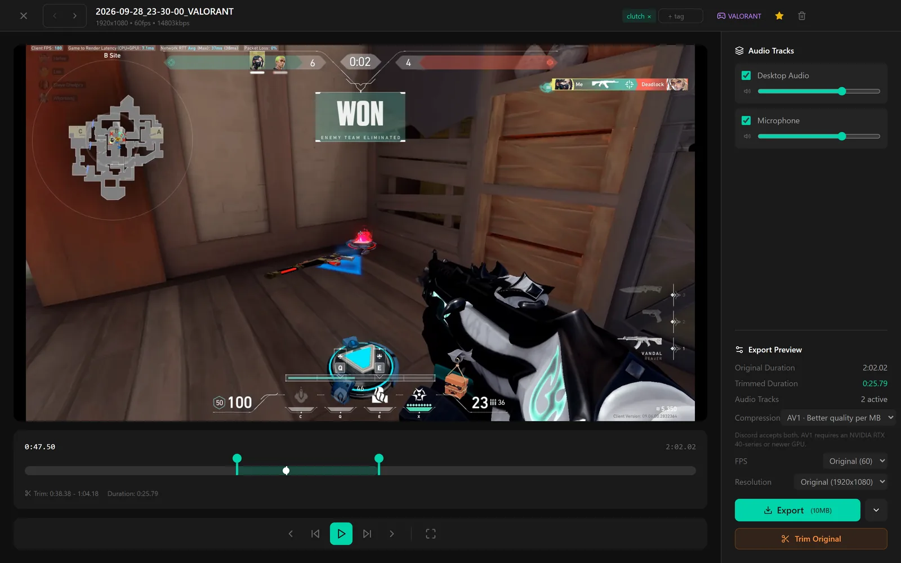
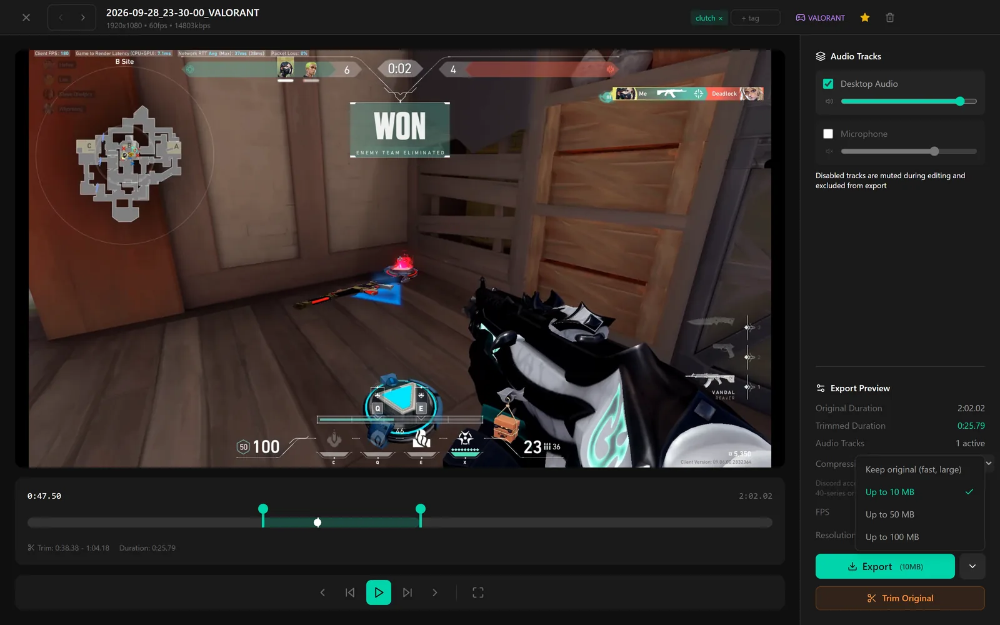
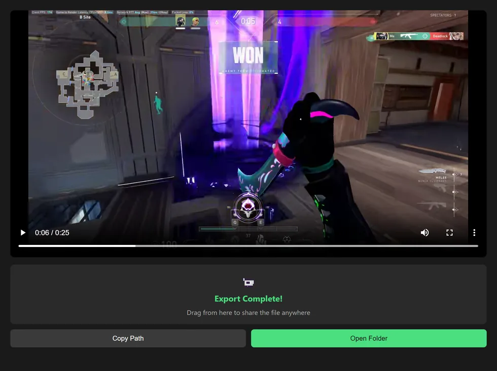
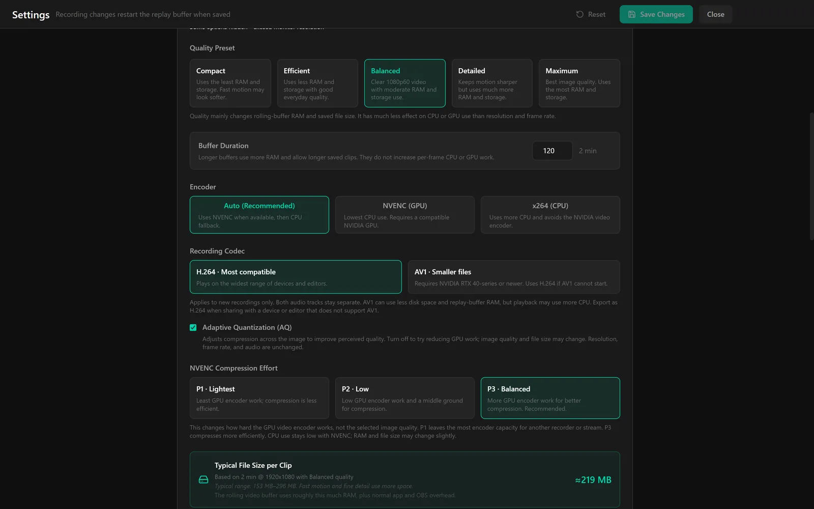
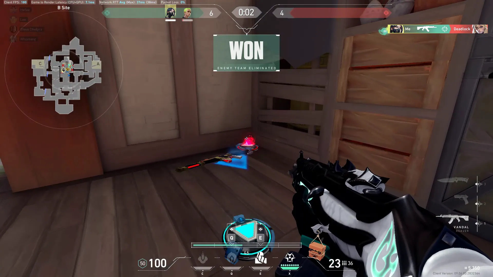

Cover story
Keep the last two minutes.
ClipVault records in the background. Press your hotkey and the last two minutes of your game are saved as an MP4.
Cover: VALORANT, recorded with ClipVault.
ClipVault is a free, open-source game clipping tool for Windows 10 and 11. It sits in the tray with an always-on replay buffer. When something happens that you want to keep, press your hotkey. The last two minutes are saved as an ordinary MP4 in a folder you choose, with game audio and your microphone on separate tracks. Trim it, switch your mic off, and export a copy small enough for Discord.
The buffer
Always recording. Two minutes by default. One key to keep them.
Always on. ClipVault runs in the system tray and can start with Windows. While it runs, it keeps an always-on replay buffer of your gameplay.
Press your hotkey and the last two minutes are saved as a clip. The key is one you choose, and the buffer length is adjustable in Settings.
The hotkey uses a low-level keyboard hook, so it works while a fullscreen game has focus. Windows shows a “Clip Saved” notification, and the clip appears in the library right away.
On first run, a four-step setup covers the clips folder, capture, audio and hotkey.
- Default buffer
- 2:00
- Adjustable in Settings.
- Save key
- A key you choose.
- Works while a fullscreen game has focus.

The file
An ordinary MP4, named by date and game, in a folder you choose.
Nothing special. A saved clip is a normal MP4 file in a folder you pick. There is no account, and nothing is uploaded.
The file name records when the clip was saved and what was being played, for example 2026-09-28_23-30-00_VALORANT.mp4. The same game is tagged on the clip in the library.
Game and desktop audio are recorded to one audio track and the microphone to another. Because they stay apart, the editor can switch either one off or change its volume before you export.


The library
Every clip as a thumbnail that plays when you point at it.
Right away. New clips show up in the library as soon as they are saved. Each one has a thumbnail, and hovering over a card plays the clip inside the grid.
Games are detected and tagged automatically. Select several clips to favorite, tag, add or remove a game, export or delete them in one go.
- View
- Grid · List
- Find
- Search
- Sort
- Date · Size · Name · Favorite
- Filter
- Game · Tag · Favorites
- Bulk
- Favorite · Tag · Game · Export · Delete



The cut
Trim it, switch the mic off, export up to 10 MB.

25.8s
Trim. Open a clip and drag the trim handles. Playback stays inside the trim. Frame-step and 5-second skip controls help place the cut. In the same view you can add tags, mark a favorite and change the game tag.
Sound. Each audio track has its own switch and volume. Turn the microphone off or raise the game audio before you export.
Export. Pick a size target: up to 10 MB, which suits Discord, or 50 MB, 100 MB, or the original size. Compression is H.264, the most compatible, or AV1, which gives better quality per MB and needs an NVIDIA RTX 40-series or newer GPU. Frame rate (30 or 60) and resolution (720p or 1080p) can be set for the export.
Trim Original trims the file in place instead. After an export, a small window lets you drag the file anywhere, copy its path or open its folder.


| Size target | Keep original · Up to 10 MB · Up to 50 MB · Up to 100 MB |
|---|---|
| Compression | H.264, most compatible · AV1, better quality per MB (NVIDIA RTX 40-series or newer) |
| Frame rate | Original · 30 · 60 |
| Resolution | Original · 720p · 1080p |
| Audio | Each track on or off, volume per track |
| In place | Trim Original |
| Afterwards | Drag the file anywhere · Copy Path · Open Folder |

The capture
It records the monitor, not the game process.
No game hooks.
No injection.
Monitor first. By default ClipVault captures the monitor through DXGI. It does not hook into games or inject anything into them, which makes it the anti-cheat friendly setting.
Other modes are optional. Games automatically is experimental: it records supported games only and follows the active game. Monitor + automatic games is also experimental. You can also pick one app window by hand.
Encoding uses NVENC on an NVIDIA GPU, which has the lowest CPU use, with x264 on the CPU as the fallback. Auto picks between them. Clips are recorded in H.264 or AV1 at up to 144 fps.
| Record | Monitor, DXGI (default) · Games automatically (experimental) · Monitor + automatic games (experimental) · One app window |
|---|---|
| Encoder | Auto · NVENC, NVIDIA GPU · x264, CPU |
| Codec | H.264 · AV1 |
| Frame rate | 30 · 60 · 120 · 144 fps |
| Quality | Compact · Efficient · Balanced · Detailed · Maximum |
| Buffer | 2:00 by default, adjustable |
| Hotkey | F9 by default, changeable in Settings |



Supplement: The 50-second tour
Saving a clip, the library, the editor, audio, export and capture settings, with captions on screen.

The fine print
Short answers to the usual questions.
What does it cost?
Nothing. ClipVault is free and open source under GPL-2.0-or-later. There is no account to create.
Which versions of Windows?
Windows 10 and 11, 64-bit. The installer is ClipVault-Setup-1.7.6.exe.
Does it touch the game?
Not with the default setting. Monitor capture through DXGI uses no game hooks and no injection, which is why it is the anti-cheat friendly choice. The automatic game modes are optional and experimental.
Does the hotkey work in a fullscreen game?
Yes. It uses a low-level keyboard hook, so it works while a fullscreen game has focus. The key is F9 by default, changeable in Settings.
Can I keep more than two minutes?
Two minutes is the default. The buffer length is adjustable in Settings.
Is my voice in every clip?
The microphone is recorded to its own track, separate from game and desktop audio. In the editor you can switch it off or change its volume before you export.
Do I need an NVIDIA graphics card?
No. NVENC is used on NVIDIA GPUs for the lowest CPU use, and x264 on the CPU is the fallback. Auto picks. AV1 needs an NVIDIA RTX 40-series or newer GPU.
Where do my clips go?
Into a folder you choose, as ordinary MP4 files. Nothing is uploaded.
How do I send a clip on Discord?
Export it with the “Up to 10 MB” size target, then drag the file from the export window into the chat.
What is it built on?
libobs, the engine from OBS Studio, plus an Electron and React app. The source is on GitHub.
Colophon
What it is made of, and where to get it.
- Software
- ClipVault 1.7.6
- Platform
- Windows 10 and 11, x64
- Installer
- ClipVault-Setup-1.7.6.exe
- License
- GPL-2.0-or-later. Free and open source.
- Engine
- libobs, the engine from OBS Studio, with an Electron and React app
- Saving
- One key, your hotkey, saves the last two minutes.
- Account
- None. Nothing is uploaded.
- This page
- Set in Inter Tight and IBM Plex Mono. Figures show the real app and the developer’s own gameplay.